BUILDING A BETTER YOU!
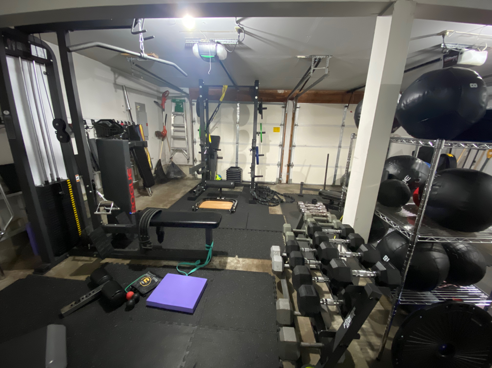

STANDING BB CURLS

how to perform a barbell curl (keep wrist neutral, ligthly pinch shoulder blades and brace core)
to
build the biceps
MACHINE PREACHER CURL

how to perform a machine preacher curl (keep wrist neutral and stretch all the way down
to
build the peak on the biceps
SUPPORTED 2 ARM CURL

how to perform a 2 arm curl (keep wrist neutral, ligthly pinch shoulder blades)
to
build the biceps
WEIGHTED DIPS (TRICEPS)
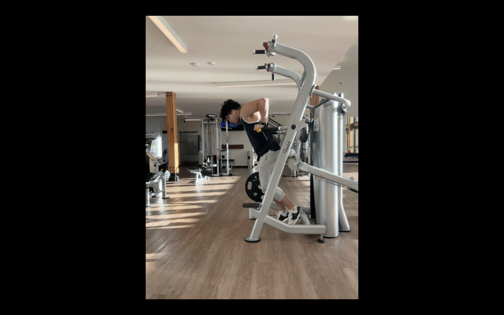
how to perform weighted dips with a belt (keep elbows in, stretch the tricep on the way down and flex as you go up)
to
build triceps
FLAT DBELL CHESTPRESS
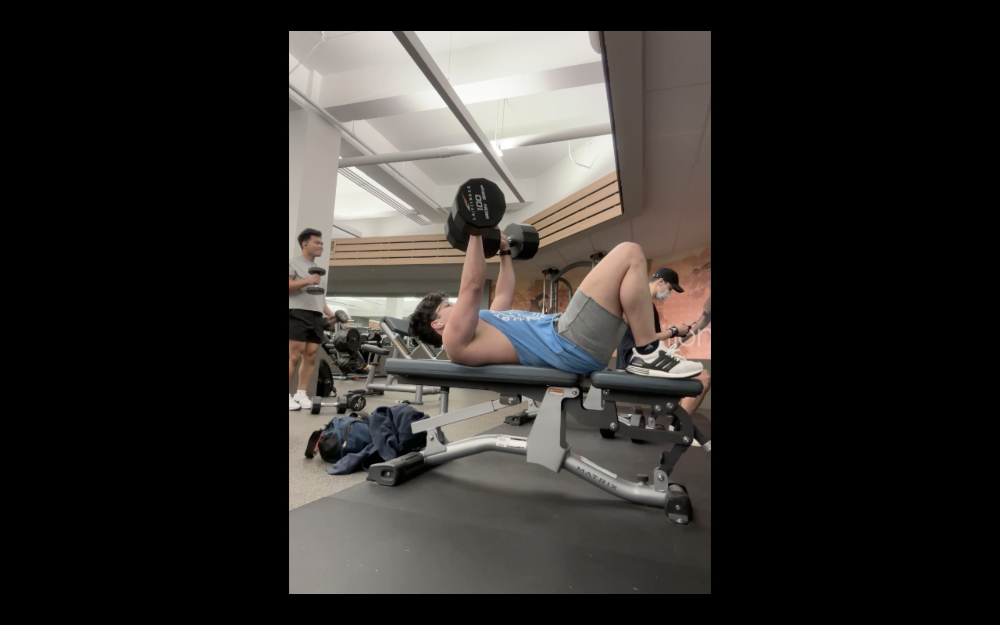
keep your back flat as you brace your core, keep your head up maintaining your chin down
as you press on the way up keep shoulder blades neutral and as you go down squeeze scapula (legs on bench)
DECLINE CABLE PRESS

keep your back flat as you brace your core, keep your head up maintaining your chin down
as you press on the way up keep shoulder blades neutral and as you go down squeeze scapula
FLAT CABLE PRESS

keep your back flat as you brace your core, keep your head up maintaining your chin down
as you press on the way up keep shoulder blades neutral and as you go down squeeze scapula (legs on bench)
INCLINE CABLE PRESS

keep your back flat as you brace your core, keep your head up maintaining your chin down
as you press on the way up towads your chin, keep shoulder blades neutral and as you go down squeeze scapula (legs on bench)
LAT PULL DOWN
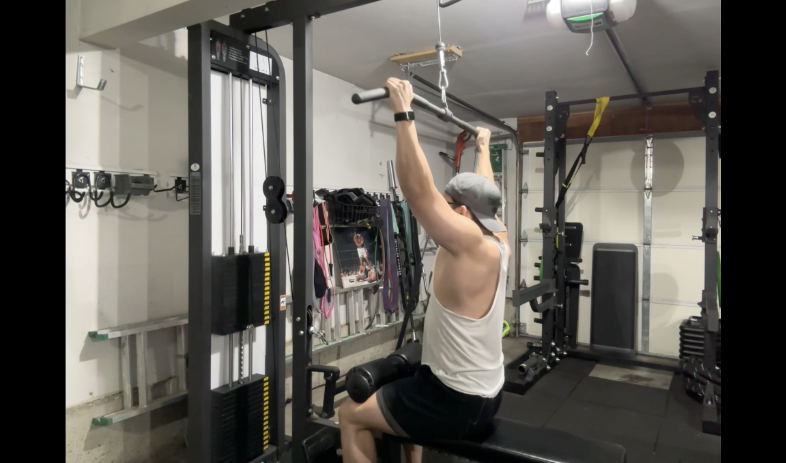
how to perform a lat pull down (relax index fingers and keep the wrist neutral)
to
build muscle
LUMBAR CABLE ROWS

how to perform a lumbar row (relax index fingers and keep the wrist neutral)
to
build muscle
2HANDLE CLOSEGRIP PD

how to perform a 2 handle close grip pull down (keep the hands distand form each other
as you pull down realx the index and pull in front of you)
to
build the lats (illiac)
ILLIAC LAT PULL DOWN

how to perform a illiac pull down (relax index fingers and keep the wrist neutral)
to
build the upper lats
CABLE CROSSOVER ROW
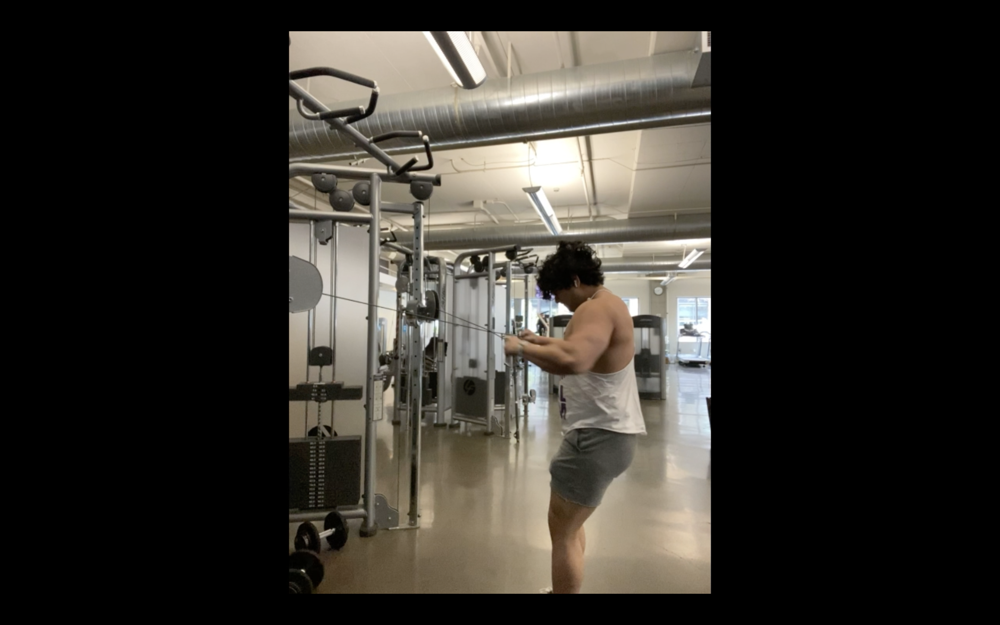
how to perform a upper back row
to
build the rear delts
SHOULDER PRESS MACHINE
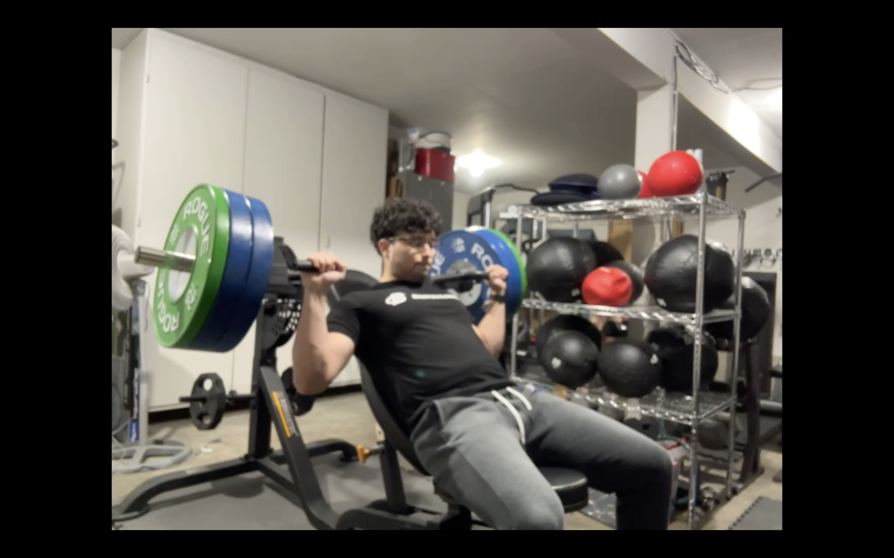
how to perform a shoulder press machine (keep the back flat)
to
build the front delts
STANDING Y RAISES (DBELL)
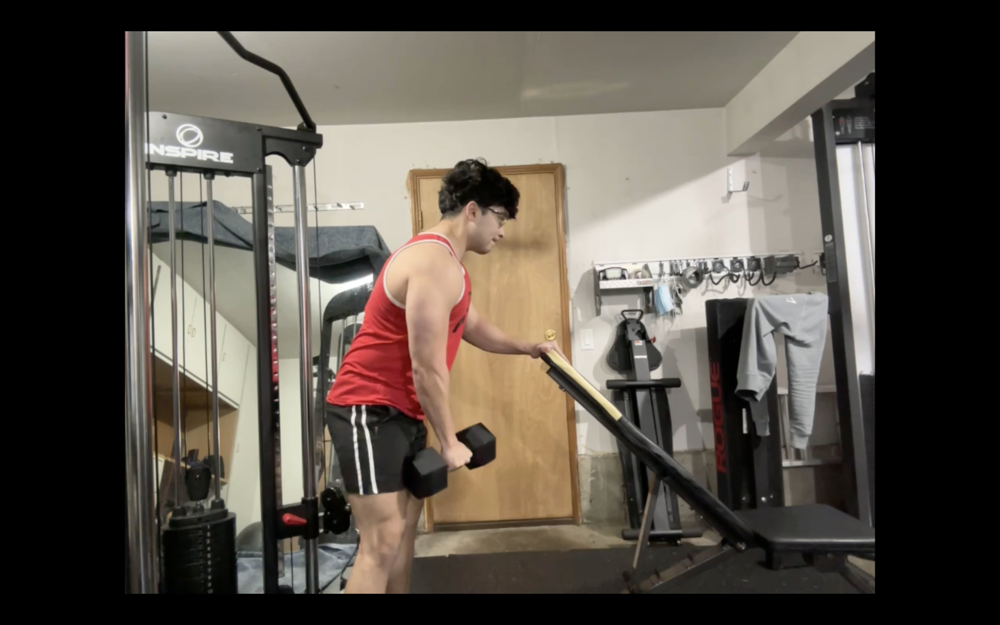
best way to build side deltoids (keep arm straigth, and go from the center towards the back)
also brance your core and sligthly pinch shoulder blades
ASSISTED SPLIT SQUAT
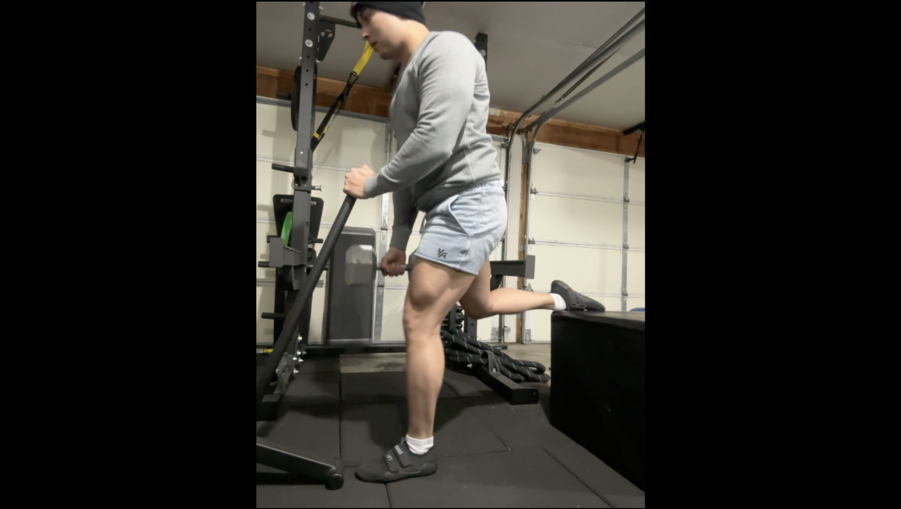
how to perform a supported split squat
to
build muscle
RDL WITH DBELL
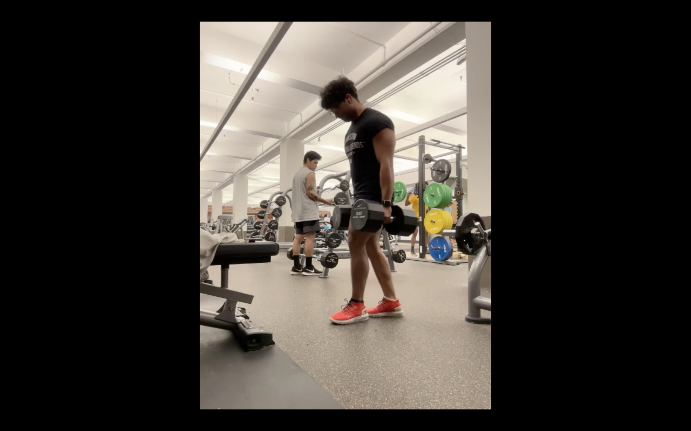
how to perform a Romanian deadlift
to
build muscle
SITTED LEG CURLS W PAD
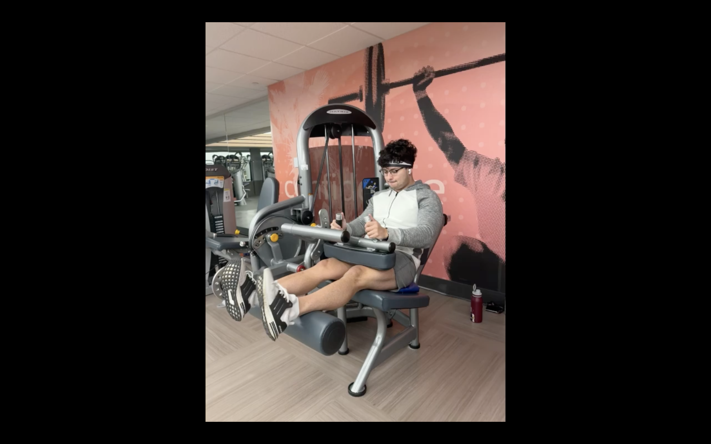
how to isolate the hamstrings (flex the toes through each rep)
LEG PRESS
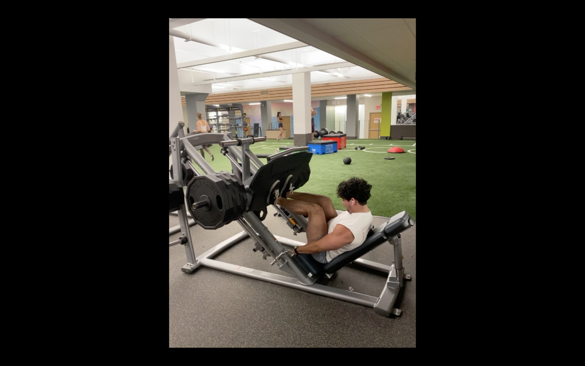
how to perform a leg press
to
build the quads and glutes
LEG EXTENSIONS ELEVATED
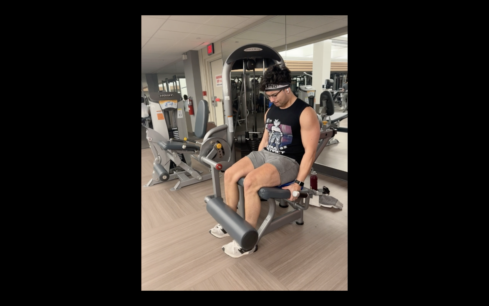
how to perform elevated leg extensions
to
build the quad drop above the knee
SUPPORTED REVERSE LUNGES
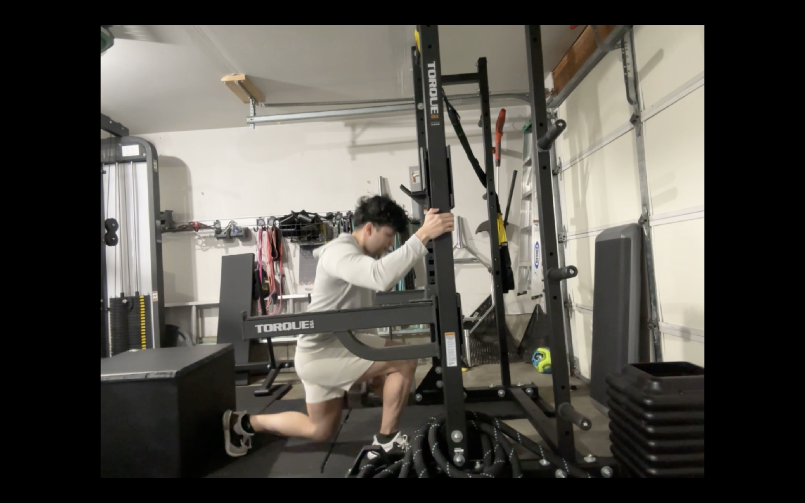
how to perform a reverse dumbbell lunge
to
build the quads and glutes